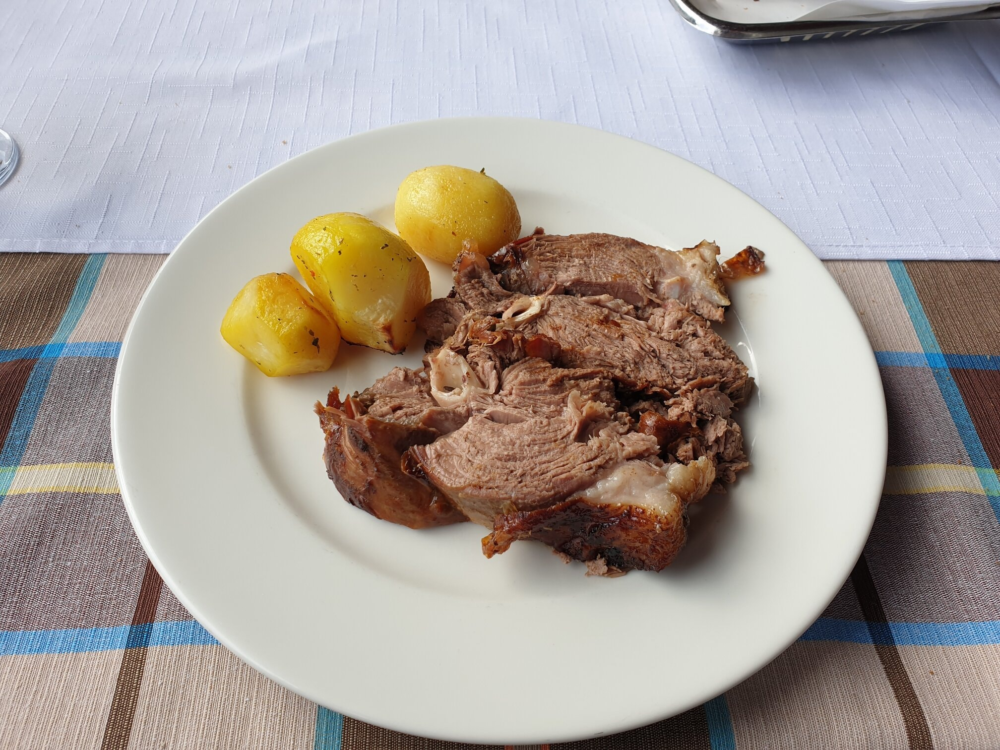

Jablanica is famous for its roasted lamb, and I can say it fully deserves the reputation. Also tried my first "Cedevita" here, which is a beverage powder that is mixed with water. Comes in lemon or orange flavors, and I have to say it tastes pretty good for a "powder". Cedevita is pretty popular all around Bosnia. Had roasted lamb at Kovačević.
Me
This is the traveller in question, me, Yusuf Kavranoglu, photographed in different countries to prove that I like travelling.
-
In Taiwan, 2023 
-
In Bosnia, 2023 
-
In Belarus, me and Lenin (me on the front), 2021 
-
In China, 2019 
Food
Places
Jablanica is an important city for the communist period of the country. It had seen enormous partisan activity against Nazi forces during the war. Now there is a museum dedicated to the resistance in the town, which has very rare items from WW2, like Sturmgewehr 44, which is the first assault rifle ever.
Also, the bridge that the partisans had destroyed during the war with explosives to disrupt Nazi advance is still "preserved" today in its destroyed form.
People
Our Airbnb host here was very kind, even though we were two hours late to check-in, and checked-in at 11pm or so because of unforseen circumcstances happened in Mostar. I'll post the review left by her below :P :
Very nice and polite guys who left behind everything clean and tidy. I would recommend that other hosts be happy to host them. I wish them a happy and successful trip,and to make their stay in B and H memorable because they have something to see and enjoy.
Images
-
Roasted lamb at Kovačević  -
The bridge destroyed by partisans -
Sturmgewehr 44